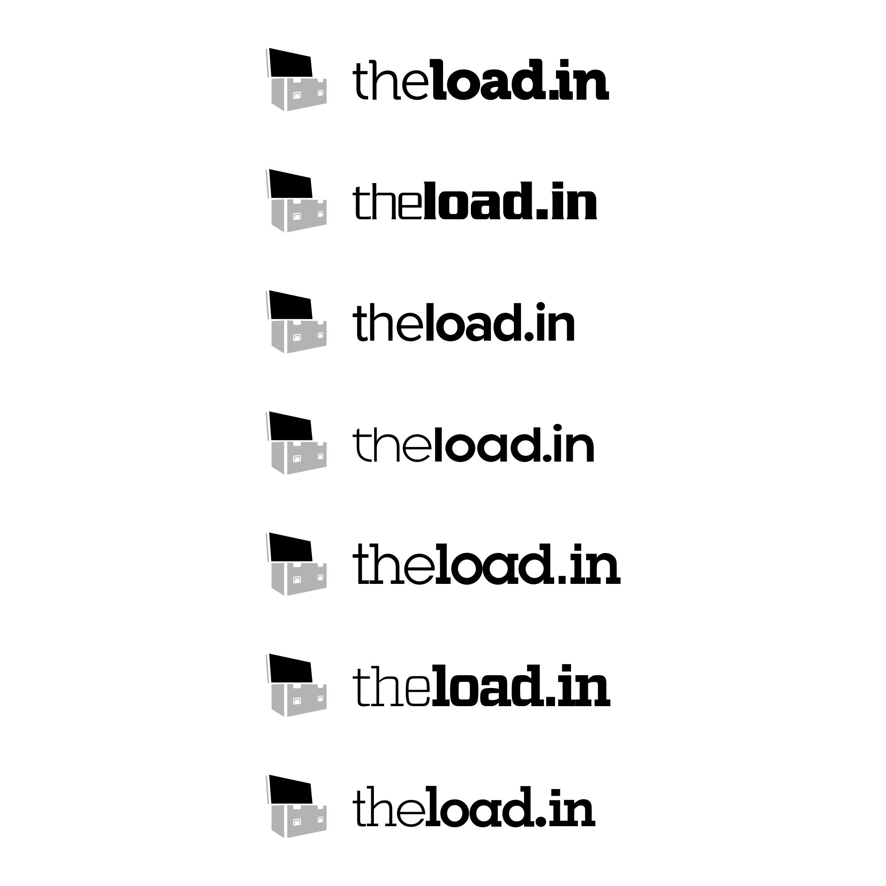
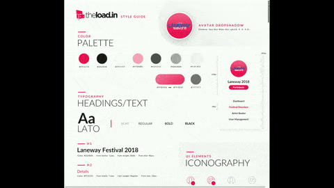
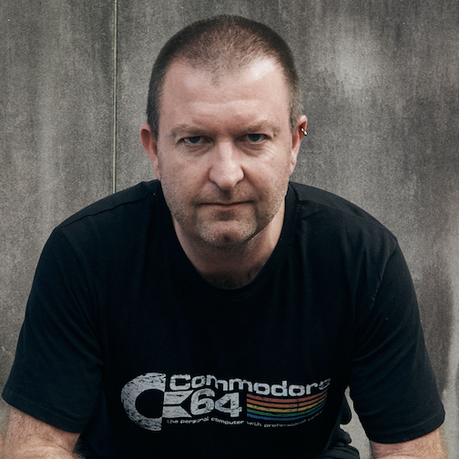

Transforming the live music industry for the better
Part 1: A case study on building a brand
Live music production is hard. A few years ago, at Australia's biggest music festival Splendour in the Grass, the headline act was about to come onstage when they realised something was wrong. Very wrong.
The stage was not laid out the way they thought they had specified it, the video wall was in the wrong place, and there were less than 15 minutes before they were due to play to 30,000 people. Things escalated quickly and it was soon apparent that the specifications they thought were the latest ones were not the one the production director thought were. There had been a disconnect from person A talking to person B, and person C talking to person D. And now was not the time to be talking about it in a calm manner over a cup of tea.
That production director was Haydn Johnston, and ever since he's had the vision (and the motivation) to transform the way the process known as 'advancing' is done in situations like these. Previously it was all a bit loose. An email here, a fax there. No real acknowledgement that it was received and is suitable.
And that was where this project was born.
Haydn and I have been good friends for years and we soon set to work scoping how we could solve this problem. I insisted from the outset that we treated this as I would any other professional design challenge, and he would act as the Subject Matter Expert. We were starting at nothing - just a problem to be solved.
My first challenge was what to call us. I'd like to say that this involved a lot of whiteboarding and brainstorming, but in fact the idea came very early and easily and no others ended up being considered. 'loading in' in the industry is the process of getting the band's equipment from the transport to the stage. It seemed a good analogy to the process we were trying to optimise, and from here theload.in (and later to become loadin.com) was born. The next challenge was branding.

Early concepts for theload.in logo
Early iterations
As part of the analogy with 'loading in', I always wanted the logomark to have a flight case. Everyone using this new system will be aware of these cases, and would make sense to incorporate that into the design as it shows awareness of the industry we are serving.
With the actual mark decided upon early, with only a late addition of wheels to be added (flight cases without wheels it seems are not very useful) - the main task left was to decide upon a typeface for the logotype.
I played around with many ideas before we came up with the preferred typeface. I needed something that complimented the mark well. I didn't want to go traditional online startup with a face synonymous with that scene. It needed to be strong, in your face but not too ornate, it was there to get the job done with the minimum of fuss. In the end, I went with Gotham.
Adding colour and weight
The logo was getting much closer now. I had decided to de-emphasise the 'the', as in all reality we were hoping to drop this further down the track as Facebook had. But we had secured the domain 'theload.in'. This was to form the logotype. The last real decision was colour of the logomark.
I was conscious not to go blue. This was a crowded space with Twitter, Facebook, LinkedIn all using shades of blue.
I wanted us to stand out, so that when you saw a row of tabs in the browser, theload.in would be immediately obvious. So the decision was made - hot pink.
I wanted the kerning to be tight as loading in is not something done with a lot of time and space, and I wanted the logo to reflect that.

Iterations of colour in the logomark
the final logo design

The full Design System at launch (2018)
I am a big proponent of living design languages and systems, and have been lucky enough to work on and with one of the greatest early adopters in this space - the Westpac Global Experience Language (GEL). I worked closely with the GEL team the entire time I was there, and was part of the working party tasked with modernising the system late in my tenure there, evolving it to a more Atomic Design-driven library.
As the Westpac GEL is open source, I based my design system on this framework. This meant all the major components were already tested for accessibility and best usability practices. I just needed to formulate a style guide.
My first task was to settle on a brand font face. I could write an entire case study alone on this, but it ended up being Lato. It is a great screen font for both headings and body copy, and has a modern, efficient feel.
The plan was always to drop the 'the' as soon as we could. I noticed everyone struggled with what to call us - The Load In, Load In, theloadin - even internally! Very few brands succeed with a 'the' as a prefix, The Iconic a possible exception. So I needed to decide on our identity as soon as we could, before we grew too big that securing that domain would be prohibitive.
There was no way at the outset we could secure 'loadin.com' which was our ultimate goal. But after 18 months of success, and the domain becoming available at a relatively reasonable price, we took the jump and rebranded. Very few brands translate well to a '.com' suffix in my opinion, however those that do are generally terms that indicate an online action of an otherwise offline task, for example 'booking.com', 'hotels.com' and 'escrow.com'. We always felt that 'loadin.com' was an example of this, so we were delighted when we finally secured the domain name and could rebrand.
It remains to be seen if it will stay loadin.com forever, or if it becomes ubiquitous enough we could even drop the '.com' from the logo as Expedia did around 10 years ago, incidentally around the time I was working with them.
In terms of the logo design, I agonised long and hard over this, but relaxed the kerning a little in certain areas. After seeing it every day, I felt it was slightly claustrophobic and needed a little bit of air. I'm delighted with where we have ended up on this branding journey.
For information on the UX design journey of loadin.com, please read part two of this story.
rebranding to loadin.com
